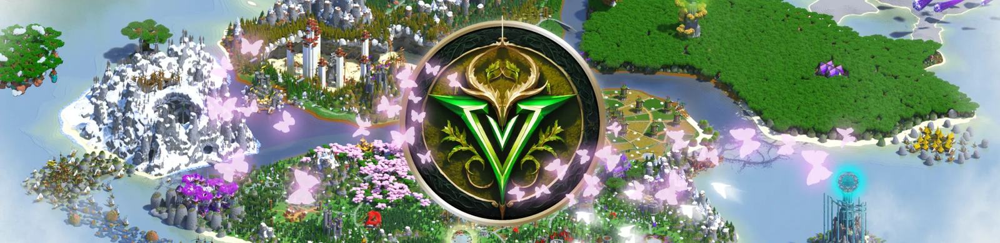

Path of Valley เราเซิร์ฟเวอร์ Minecraft แนว MMO ฟาร์มเวลที่มีเนื้อเรื่องแสนเข้มข้น และมีระบบต่างๆเยอะมากมายจนนับไม่อาจไหว เพราะงั้นจงใช้เว็บไซต์นี้เพื่อค้นคว้าความรู้และประสบการณ์ของคุณ
"เมื่อเสียงกระซิบจากต้นไม้ศักดิ์สิทธิ์เงียบหาย... เงาที่ถูกผนึกไว้ก็เริ่มเคลื่อนไหวอีกครั้ง
จงออกเดินทางในฐานะ นักรบผู้ไร้มลทิน และพิสูจน์ว่าความหวังของโลกใบนี้... ยังไม่ดับสูญ"
ดูข้อมูลเกี่ยวกับเมืองต่างๆ และข้อมูลเกี่ยวกับ มอนสเตอร์ในแต่ละพื้นที่
ดูข้อมูลสำหรับสายการผลิต วิธีการหาวัตถุดิบเพื่อคราฟอาหารและยา
ดูข้อมูลเกี่ยวกับปรากฏการณ์แปลกๆ ที่เกิดขึ้นในแต่ละดินแดน และผลกระทบต่อผู้ที่พบเจอ
เส้นทางความชำนาญของผู้เก็บเกี่ยว ตั้งแต่มือใหม่จนถึงปรมาจารย์
ไทม์ไลน์เหตุการณ์ บทที่ปลดล็อกแล้ว และปริศนาที่ยังไร้คำตอบของหุบเขา
รายชื่อลัทธิและความสามารถของแต่ละลัทธิ ว่าเมื่อเข้าแล้วได้ผลตอบแทนอย่างไรบ้าง